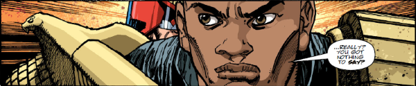

Son of the Judge Giant who was murdered by Orlok during the Block Mania crisis, this Judge Giant was a cadet under Dredd, who has taken a personal interest in his career.
Art by Henry Flint & Gary Caldwell
| Story Title | Parts | Pages | w indicates a wraparound coverCovers | Year(s) | Issues | Writer | Artist | Colourist | Letterer |
|---|---|---|---|---|---|---|---|---|---|
From Judge DreddYoung Giant | 5 | 30 | Carlos Ezquerra 1 | 1989 | Reprints: M216651-655 | John Wagner | Carlos Ezquerra | <-- | Steve Potter |
From Judge DreddNecropolis | 26 | 174 | 674: Carlos Ezquerra 685: Carlos Ezquerra 690: David Hine 691: Mick Austin 693: Mike Hadley 696: Steve Yeowell 699: Dermot Power 7 | 1990 | Reprints: M3.21‑M3.35674-699 | John Wagner | Carlos Ezquerra | <-- | Tom Frame |
From Judge DreddGiant | 3 | + 3 credit pages28 | M2.52: Cliff Robinson 1 | 1994 | M2.50-M2.52 | John Wagner | Ian Gibson | <-- | Tom Frame |
From Judge DreddThe Pit | 14 | 86 | 970: Carlos Ezquerra 974: Cliff Robinson 978: Colin MacNeil 3 | 1995-1996 | 970-983 | John Wagner | Carlos Ezquerra: 1‑8 Colin MacNeil: 9‑11 Lee Sullivan: 12‑14 various | Alan Craddock: 9‑11 Mike Hadley: 12‑14 various | Tom Frame |
From Judge Dredd | The PitLast Rites | 1 | 6 | 0 | 1996 | 990 | John Wagner | Lee Sullivan | Alan Craddock | Tom Frame |
From Judge Dredd | The PitDeclaration of War | 1 | 6 | 0 | 1996 | 991 | John Wagner | Lee Sullivan | Alan Craddock | Tom Frame |
From Judge DreddMissing | 6 | 36 | 1079: Jason Brashill 1 | 1998 | 1078-1083 | John Wagner | Lee Sullivan | Alan Craddock | Tom Frame |
From Judge DreddJudge Dredd vs. Aliens: Incubus | 15 | 96 | 1322: Kevin Walker 1324: Greg Staples 1330 [w]: Frazer Irving 1335: Jock [plus variant] 3,1w | 2002-2003 | p2003, 1322-1335 | Andy Diggle John Wagnervarious | Henry Flint | Chris Blythe | Tom Frame |
From Judge DreddBato Loco | 1 | 12 | 0 | 2003 | Reprints: M326 (supplement)M202 | Gordon Rennie | Simon Coleby | Chris Blythe | Tom Frame |
From Judge DreddProdigal | 1 | 12 | 0 | 2004 | Reprints: M339 (supplement)M216 | Gordon Rennie | Simon Davis | <-- | Tom Frame |
From Whatever Happened to...John Giant Clay? | 1 | 6 | 0 | 2004 | Reprints: M388 (supplement)M216 | Gordon Rennie | Rufus Dayglo | [b&w] | Tom Frame |
From Judge Dredd Featuring SJS Judge Ishmael.Gulag | 5 | 30 | 1385: Charlie Adlard and Chris Blythe 1 | 2004 | 1382-1386 | Gordon Rennie | Charlie Adlard | Chris Blythe | Tom Frame |
From Judge DreddLast Respects | 1 | 6 | 0 | 2004 | 1389 | Gordon Rennie | John McCrea | Gary Caldwell | Tom Frame |
From Judge DreddSix | 2 | 24 | 0 | 2004 | M221-M222 | John Wagner | Chris Weston | <-- | Tom Frame |
From Judge DreddBlood Trails | 10 | 60 | 0 | 2005 | 1440-1449 | Gordon Rennie | Andrew Currie | Chris Blythe | Tom Frame |
From Judge DreddMatters of Life and Death | 1 | 6 | 0 | 2005 | 1452 | Gordon Rennie | Carlos Ezquerra | <-- | Tom Frame |
From Judge DreddBurned Out | 2 | 12 | 0 | 2005 | 1461, M238 | Gordon Rennie | Carl Critchlow | <-- | Tom Frame |
From ShimuraThe Harder They Come | 6 | 48 | M241: Colin MacNeil 1 | 2005-2006 | M238-243 | Robbie Morrison | Colin MacNeil | [b&w] | Ellie de Ville |
From Judge DreddRegime Change | 4 | 40 | M246: Rufus Dayglo M248: Dylan Teague 2 | 2006 | M246-M249 | Gordon Rennie | Inaki Miranda | Eva de la Cruz | Tom Frame |
From Judge Dredd Featuring SJS Judge Ishmael.The Hotshot | 1 | 10 | Staz Johnson & Eva De La Cruz 1 | 2007 | M256 | Gordon Rennie | Len O'Grady | <-- | Annie Parkhouse |
From Judge DreddThe Biographer | 1 | 6 | 0 | 2007 | 1537 | Rob Williams | Boo Cook | <-- | Annie Parkhouse |
From Judge DreddMutopia | 2 | 12 | 0 | 2008 | 1611-1612 | Al Ewing | Simon Fraser | Gary Caldwell | Annie Parkhouse |
From Judge DreddKoan | 1 | 10 | 0 | 2008 | Reprints: M416 (supplement)M278 | Al Ewing | Paul Marshall | Chris Blythe | Annie Parkhouse |
From Judge Dredd Part of the "Tour of Duty" arc.What's Another Year | 1 | 12 | John Higgins 1 | 2009 | M292 | Al Ewing | John Higgins | J.H. & S.J. Hurst | Annie Parkhouse |
From Judge DreddBlood Culture | 1 | 10 | 0 | 2011 | M306 | Michael Carroll | Jon Davis-Hunt | <-- | Annie Parkhouse |
From Judge DreddServed Cold | 8 | 48 | 1718: Karl Richardson 1723: 1 | 2011 | 1718-1725 | Al Ewing | John Higgins | Sally Hurst | Annie Parkhouse |
From Judge DreddFit | 1 | 6 | 0 | 2014 | 1873 | Rob Williams | Henry Flint | <-- | Annie Parkhouse |
From Judge Dredd Sequel to Titan (1862‑1869).Enceladus: New Life | 5 | 30 | 1926: Henry Flint 1 | 2015 | 1924-1928 | Rob Williams | Henry Flint | <-- | Annie Parkhouse |
From Judge Dredd Part of the Every Empire Falls arc. Preceded by The Grindstone Cowboys in the prog.The Lion's Den | 8 | 48 | 1981: Jon Davis‑Hunt 1 | 2016 | 1978-1985 | Michael Carroll | PJ Holden | Adam Brown | Annie Parkhouse |
From Judge Dredd Part of the Every Empire Falls arc. Preceded by The Lion's Den in the prog.Reclamation | 5 | 30 | 1986: Tom Foster 1990: Jake Lynch 2 | 2016 | 1986-1990 | Michael Carroll | Colin MacNeil | Len O'Grady | Annie Parkhouse |
From Judge DreddAct of Grud | 3 | 18 | 2006: Henry Flint 1 | 2016 | 2004-2006 | Rob Williams | Henry Flint | <-- | Annie Parkhouse |
From Judge Dredd Features a cameo from Barney and also float parade balloons of: ‑ Dave the Orangutan ‑ Judge Fish ‑ Giant of the Harlem Heroes ‑ Fergee ‑ Otto Sump Boxing Day | 1 | 12 | 0 | 2016 | 2011 | Rob Williams | Chris Weston | <-- | Annie Parkhouse |
From Judge DreddThe Small House | 10 | 62 | 2102: Cliff Robinson & Dylan Teague 2104: Jake Lynch 2 | 2018 | 2100-2109 | Rob Williams | Henry Flint | Chris Blythe | Annie Parkhouse |
From Judge DreddPets | 1 | 6 | 0 | 2019 | 2134 | Rob Williams | Henry Flint | Gary Caldwell | Annie Parkhouse |
From Judge DreddCold Case | 1 | 6 | 0 | 2020 | 2169 | Kenneth Niemand | Tom Foster | Chris Blythe | Annie Parkhouse |
From Judge DreddEnd of Days | 15 | 92 | 2184: Steven Austin & Quinton Winter 2185: Patrick Goddard & Dylan Teague 2189: Neil Roberts 2192: Richard Elson 2199: Paul Williams & Chris Blythe 5 | 2020 | 2184-2195, 2197-2199 | Rob Williams | Colin MacNeil: 1‑6 Henry Flint: 7‑15 various | Chris Blythe | Simon Bowland: 1 Annie Parkhouse: 2‑15 various |
From Judge DreddExtraction | 1 | 10 | Paul Williams & Chris Blythe 1 | 2020 | M422 | Rory McConville | Ben Willsher | <-- | Annie Parkhouse |
| year | episodes | pages |
| 1987 | 0 | 0 |
| 1988 | 0 | 0 |
| 1989 | 5 | 30 |
| 1990 | 26 | 174 |
| 1991 | 0 | 0 |
| 1992 | 0 | 0 |
| 1993 | 0 | 0 |
| 1994 | 3 | 28 |
| 1995 | 3 | 19 |
| 1996 | 13 | 79 |
| 1997 | 0 | 0 |
| 1998 | 6 | 36 |
| 1999 | 0 | 0 |
| 2000 | 0 | 0 |
| 2001 | 0 | 0 |
| 2002 | 1 | 6 |
| 2003 | 15 | 102 |
| 2004 | 10 | 78 |
| 2005 | 16 | 102 |
| 2006 | 7 | 64 |
| 2007 | 2 | 16 |
| 2008 | 3 | 22 |
| 2009 | 1 | 12 |
| 2010 | 0 | 0 |
| 2011 | 9 | 58 |
| 2012 | 0 | 0 |
| 2013 | 0 | 0 |
| 2014 | 1 | 6 |
| 2015 | 5 | 30 |
| 2016 | 17 | 108 |
| 2017 | 0 | 0 |
| 2018 | 10 | 62 |
| 2019 | 1 | 6 |
| 2020 | 17 | 108 |
| 2021 | 0 | 0 |